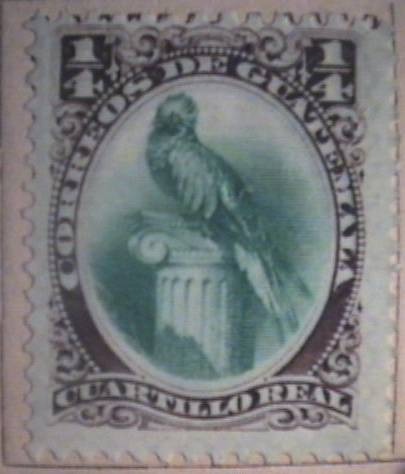
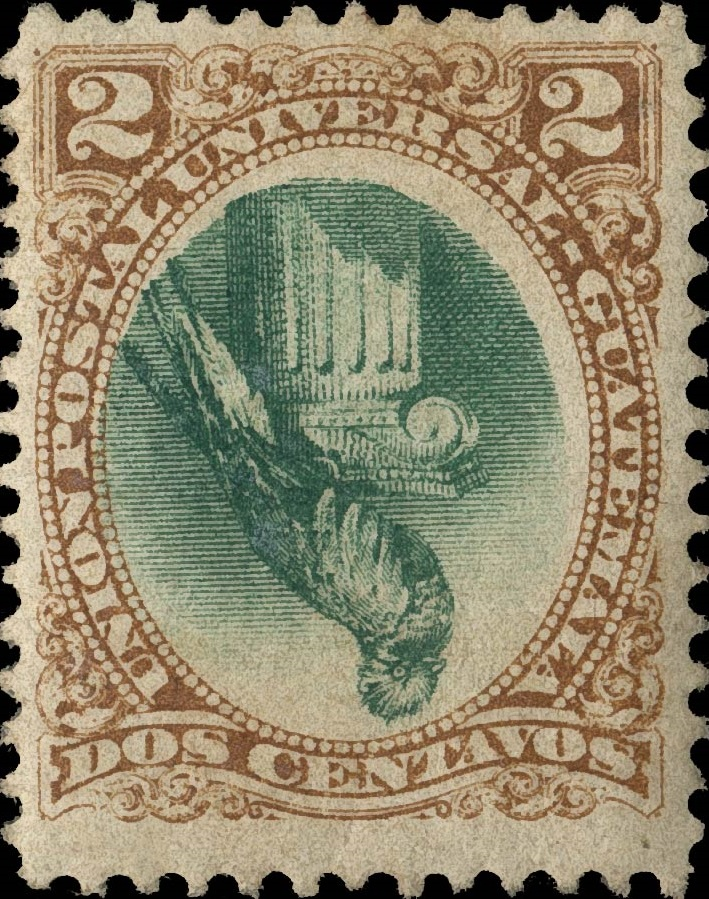
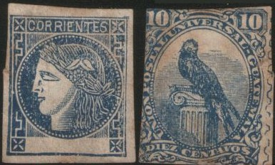

{kind=link}


Return To Catalogue - Guatemala 1871-1878 - Guatemala 1886-1896 - Guatemala 1897-1920 - Guatemala miscellaneous
Note: on my website many of the
pictures can not be seen! They are of course present in the
catalogue;
contact me if you want to purchase the catalogue.
For issues of Guatemala from 1871 to 1878 click here.
Value in Reales
1/4 r brown and green 1 r black and green
Value of the stamps |
|||
vc = very common c = common * = not so common ** = uncommon |
*** = very uncommon R = rare RR = very rare RRR = extremely rare |
||
| Value | Unused | Used | Remarks |
| 1/4 r | *** | *** | |
| 1 r | *** | *** | |
Surcharged

'1 centavo' on 1/4 r brown and green '10 centavos' on 1 r black and green
Value of the stamps |
|||
vc = very common c = common * = not so common ** = uncommon |
*** = very uncommon R = rare RR = very rare RRR = extremely rare |
||
| Value | Unused | Used | Remarks |
| 1 c on 1/4 r | *** | *** | |
| 10 c on 1 r | *** | *** | |
Value in Centavos (1881)


1 c black and green 2 c brown and green 5 c red and green 10 c grey and green 20 c yellow and green
Value of the stamps |
|||
vc = very common c = common * = not so common ** = uncommon |
*** = very uncommon R = rare RR = very rare RRR = extremely rare |
||
| Value | Unused | Used | Remarks |
| 1 c | * | * | |
| 2 c | c | * | Exists with inverted center: RRR |
| 5 c | * | * | Exists with inverted center: RRR |
| 10 c | * | * | |
| 20 c | * | * | Exists with inverted center: RRR |

Genuine stamps with inverted centers of the 2 c ,5 c and 20 c
values (images obtained from a Shreves auction:
https://stampauctionnetwork.com/f/f527.cfm )
The forger Sperati made forgeries of the 2 c with inverted centers, examples:

Sperati forged inverted centers of the 2 c stamp (last 3 images
obtained from a Shreves auction:
https://stampauctionnetwork.com/f/f527.cfm). The Sperati
forgeries are lithographed instead of engraved as in the genuine
stamps. I've also seen a black 'proof' and a coloured 'proof'
made by Sperati of this misprint.
Sperati also made forgeries of the 20 c value.

Forged 10 c grey with a forged Corrientes stamp printed on the
backside; both sides are shown in the above stamp.
Imperforate reprint minisheet made in 1949 with a red 1 c
reprint.
Mute cancels, examples:


Flower cancel, concentric rings cancel, double mute cancel and
red star cancel.

25 c red 50 c red 75 c red 100 c red 150 c red
Value of the stamps |
|||
vc = very common c = common * = not so common ** = uncommon |
*** = very uncommon R = rare RR = very rare RRR = extremely rare |
||
| Value | Unused | Used | Remarks |
| 25 c | * | * | |
| 50 c | * | * | |
| 75 c | * | * | |
| 100 c | * | * | |
| 150 c | * | * | |
Various errors exist in the overprints.
{kind=link}
{kind=link}